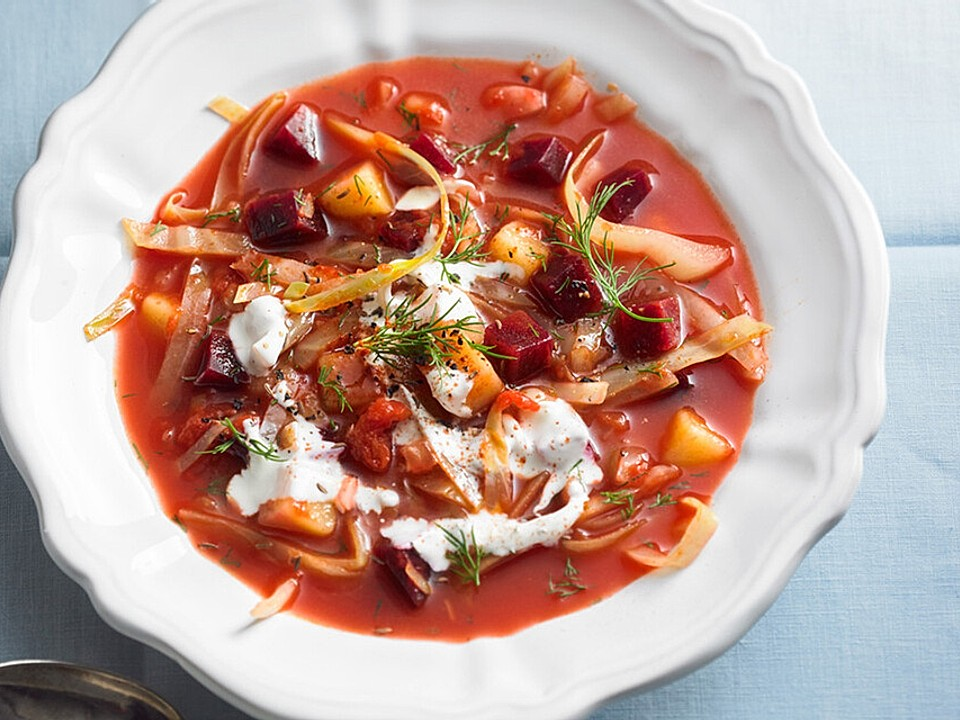

Borsch

Description
is a sour soup, made with meat stock, vegetables and seasonings, common in Eastern Europe and Northern Asia. In English, the word "borscht" is most often associated with the soup's variant of Ukrainian origin, made with red beetroots as one of the main ingredients, which give the dish its distinctive red color.
Ingredients
- Beetroots
- Tomatoes
- Vinegar
- Cabbage
- Potatoe
- Meat
Steps
- To make the stock, put the meat, whole onion, bay leaf and 2 litres of lightly salted cold water in a large saucepan. Cook over a very low heat for 1 hr 30 mins or until the beef shin is soft and falls apart easily – this can take up to 3 hrs. Skim off the scum with a spoon from time to time. Break up any larger pieces of beef into the broth, remove the whole onion and discard.
- Add the potatoes to the borscht, season well with salt and pepper and cook for 10-15 mins until tender. Meanwhile, heat the sunflower oil in a large, deep frying pan. Add the diced onion and carrot, and cook over a medium heat, stirring, until the carrot is soft and is about to start caramelising.
- Add the beetroot and cook for around 5 mins, stirring occasionally. Add the red pepper, if using, and cook for another 2 mins, then add the tomatoes and prunes, stir, then increase the heat and boil to reduce slightly, before adding everything to the borscht.
- Add the shredded cabbage and the kidney beans, and cook for 7-10 mins or until tender. Serve with a dollop of sour cream or crème fraîche, lots of chopped dill and some crusty bread.